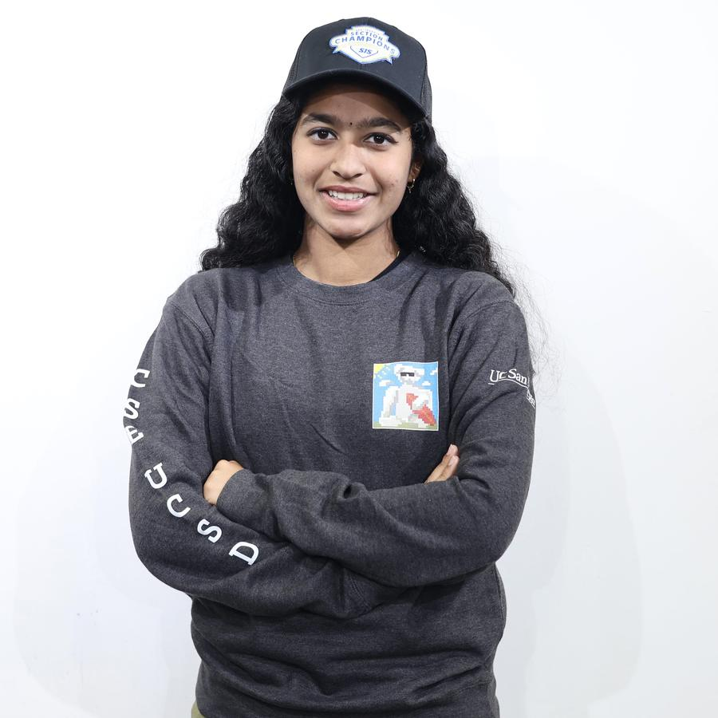

photoJayani Duggirala
Computer Science at UC San Diego. Open to Summer 2027 internships
I live in the intersection of dev, ML, systems, and fintech. 2x Division 1 CIF SJS Section Champion (tennis): Organized, Consistent.
- Studying
- B.S. Computer Science, class of 2029
- Currently
- AI Events Lead, ACM AI at UCSD. TQT Board
- Research
- Automatic music transcription, ORCA
- Interests
- Deep learning, computer vision, audio ML, fintech
Modelling that which cannot be pinned down mathematically.
Selected work
Projects
2026
Audiate
Transcribes hummed melodies and symphonic audio into animated MIDI. Maps vocal input to the nearest semitone and derives bow stroke direction from rhythm data. Haptic feedback syncs to the note timeline for deaf and hard of hearing musicians.
Python, CREPE, librosa, Swift. Third place, SDx Hackathon.
2025 to 2026
AMT pipeline
Transcription pipeline for ORCA: source separation, per instrument MR-MT3 embedding extraction, music theory constrained decoding, then MIDI output. Constrains generation with domain knowledge instead of cleaning up model output afterward.
Deep learning, MR-MT3, MIDI.
2025
Matchstick
Full stack web app that matches students for study sessions by class schedule and location. Built the dashboard and match pages, including the filtering logic that pairs peers by enrolled course. Led ideation across a team of five.
JavaScript, full stack. First place, WIC Fall Project Teams.
2026
Climate prediction
Entry for the NSF HDR machine learning challenge at the NSF HDR and UCSD SMASH Hackathon, working the ecological data track.
Python, scikit-learn.
Current focus
Research
I work on automatic music transcription with ORCA, the CSE Society's AI assisted music recognition tool. The problem is turning real audio into notation a musician would recognize.
We started with the music itself: timbre, polyphonic versus monophonic tracking, and how hearing resolves overlapping sound. That became a literature review of existing architectures, including Onsets and Frames, MR-MT3, and generative source separation. From there I moved to building with CREPE for pitch detection and librosa for onset detection, then tested source separation on multi track audio. The result is the pipeline above.
Publication
Roles
Experience
-
2026, now
AI Events Lead
ACM AI at UC San Diego
Design the AI School workshop curriculum covering classification, logistic regression, neural network fundamentals, and evaluation. Built the teaching materials in scikit-learn and Keras. Run community hours on environment setup and Manim.
-
2025, 2026
Researcher and Developer, ORCA
CSE Society at UC San Diego
Reviewed literature on self supervised music representation learning, transcription architectures, and generative source separation. Co-authored a literature review comparing state of the art models, and proposed the pipeline the team adopted.
-
2025
Full Stack Developer, Matchstick
Women in Computing at UC San Diego
First place in the Fall Project Teams education track. Built the dashboard and match pages and led development across a team of five.
Education
-
2025 to 2029
B.S. Computer Science
University of California, San Diego
Computer Vision, Data Structures and Algorithms, Linear Algebra, Probability and Statistics, Multivariable Calculus, Object Oriented Programming.
Tools
Skills
Languages
Python, Java, Swift, C, JavaScript, HTML and CSS
Machine learning
PyTorch, TensorFlow, Keras, scikit-learn, Hugging Face, pandas, NumPy, matplotlib
Audio and vision
CREPE, librosa, MR-MT3, source separation, computer vision
Developer tools
Git, Jupyter, Google Colab, Kaggle, Docker, Kubernetes, Figma, Manim
Recognition
Awards
-
Spring 2026
First place, DataHacks at UCSD, economics track, 400 plus participants
-
Winter 2026
First place, UCSD programming competition for underclassmen
-
Spring 2026
Third place, SDx UCSD Hackathon, for Audiate
-
Fall 2025
First place, WIC Fall Project Teams, for Matchstick